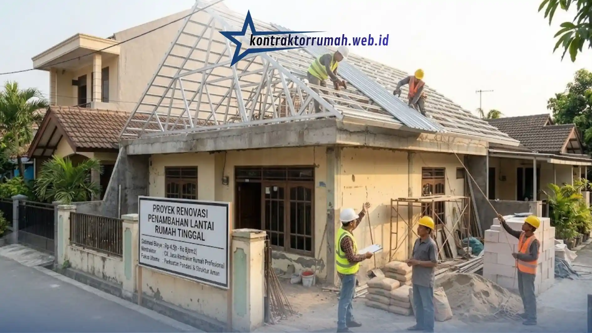

Menambah lantai pada rumah yang sudah berdiri adalah solusi populer bagi keluarga yang butuh ruang lebih tanpa harus pindah atau membeli lahan baru. Namun, sebelum memutuskan untuk membongkar atap dan menaikkan dinding, pertanyaan pertama yang muncul di kepala hampir semua pemilik rumah adalah: berapa sebenarnya biaya renovasi rumah 2 lantai yang harus disiapkan, dan apakah pondasi lama sanggup menahan beban tambahan tersebut?
Pertanyaan ini wajar. Menaikkan lantai bukan sekadar menambah tembok baru di atas atap lama. Ada perhitungan struktur, kekuatan tanah, hingga kualitas material yang semuanya berdampak langsung pada keamanan jangka panjang rumah Anda. Artikel ini disusun oleh tim Kontraktor Rumah untuk membantu Anda memahami gambaran biaya secara realistis sekaligus langkah teknis yang perlu dilakukan agar proses renovasi berjalan aman, efisien, dan bebas dari risiko ambles di kemudian hari.
Poin Penting
- Biaya renovasi rumah 2 lantai berkisar Rp 4,5 juta - Rp 8 juta per m², tergantung spesifikasi material.
- Audit struktur pondasi wajib dilakukan sebelum satu batu bata pun dinaikkan.
- Uji sondir tanah menentukan metode perkuatan pondasi yang paling tepat dan akurat.
- Metode suntik pondasi cakar ayam & kolom praktis bisa memperkuat pondasi tanpa bongkar total.
- Konsultasi struktur gratis tersedia sebelum proyek dimulai bersama tim Kontraktor Rumah.
Mengapa Menambah Lantai ke Atas Perlu Perencanaan Matang?
Banyak orang beranggapan menambah lantai kedua hanya soal menambah bata dan semen. Kenyataannya, ini adalah pekerjaan struktural yang menyentuh inti kekuatan bangunan: pondasi, kolom, dan balok. Rumah satu lantai umumnya dirancang dengan pondasi yang diperhitungkan hanya untuk menahan beban satu lantai saja. Ketika lantai kedua ditambahkan tanpa evaluasi struktur, beban yang diterima pondasi bisa meningkat signifikan, dan inilah yang paling sering menjadi penyebab retak rambut pada dinding, penurunan tanah tidak merata, hingga risiko ambles pada kasus yang lebih parah.
Perencanaan matang berarti melakukan audit struktur terlebih dahulu sebelum satu batu bata pun dinaikkan. Tim teknik sipil perlu memeriksa kondisi pondasi eksisting, diameter besi tulangan kolom yang sudah tertanam, serta daya dukung tanah di lokasi rumah Anda. Tanpa tahapan ini, estimasi biaya yang dibuat berisiko meleset jauh karena ada kemungkinan pondasi harus diperkuat total, bukan sekadar ditambal seadanya.
Berapa Estimasi Biaya Renovasi Rumah 1 Lantai Menjadi 2 Lantai?
Secara umum, biaya renovasi rumah 2 lantai berkisar antara Rp 4,5 juta hingga Rp 8 juta per meter persegi, tergantung spesifikasi material dan tingkat kerumitan struktur. Sebelum angka ini difinalkan, audit kelayakan struktur pondasi wajib dilakukan agar rumah Anda tidak berisiko ambles akibat beban tambahan lantai baru. Angka ini adalah gambaran awal yang perlu disesuaikan lagi setelah survei langsung ke lokasi.
Perbedaan harga antar tipe konstruksi umumnya ditentukan oleh kualitas besi, jenis semen, ketebalan plat lantai, hingga finishing yang dipilih. Berikut gambaran perbandingan biaya per meter persegi yang biasa digunakan sebagai acuan awal oleh tim Kontraktor Rumah:
| Komponen | Tipe Standard (Rp/m²) | Tipe Premium (Rp/m²) |
|---|---|---|
| Rentang Biaya | Rp 4.500.000 - Rp 5.500.000 | Rp 6.000.000 - Rp 8.000.000 |
| Struktur Beton | Mutu K-225, besi ulir SNI standar | Mutu K-250 ke atas, besi ulir SNI premium |
| Material Dinding | Bata merah/hebel standar | Hebel premium, plester halus dua lapis |
| Finishing Lantai | Keramik lokal 60x60 | Granit atau homogeneous tile impor |
| Atap & Plafon | Baja ringan standar, plafon gypsum biasa | Baja ringan galvalum tebal, plafon gypsum jointless |
Perlu dicatat, angka di atas adalah estimasi biaya konstruksi murni per meter persegi. Untuk rumah yang membutuhkan perkuatan pondasi atau penggantian struktur kolom lama, akan ada komponen biaya tambahan yang sifatnya kondisional tergantung hasil pemeriksaan lapangan.
Solusi Struktur Aman: Menghindari Pondasi Rumah Tingkat Ambles
Kekhawatiran terbesar pemilik rumah saat menambah lantai adalah risiko pondasi tidak kuat menahan beban baru. Kabar baiknya, ada beberapa metode teknik sipil yang sudah teruji untuk mengatasi hal ini tanpa harus membongkar seluruh bangunan dari nol.
Metode pertama yang umum diterapkan adalah suntik pondasi cakar ayam, yaitu teknik memperkuat pondasi lama dengan menambahkan campuran beton bertekanan tinggi ke celah-celah pondasi eksisting agar daya dukungnya meningkat tanpa perlu membongkar total. Metode ini efektif untuk rumah dengan kondisi pondasi yang masih relatif baik namun perlu penguatan tambahan.
Selain itu, penambahan kolom praktis pada titik-titik struktural tertentu berfungsi mengikat dinding dan menyalurkan beban lantai atas secara merata ke pondasi. Kolom praktis biasanya dipasang setiap jarak 3-4 meter dan pada setiap pertemuan sudut dinding, memakai besi tulangan minimal diameter 10-12 mm sesuai standar teknik sipil.
Komponen lain yang tidak boleh diabaikan adalah balok beton bertulang sebagai elemen horizontal yang menopang plat lantai dua. Perhitungan dimensi balok mengikuti standar SNI beton bertulang, dengan mempertimbangkan bentang ruangan, beban hidup (penghuni dan perabot), serta beban mati (material bangunan itu sendiri). Balok yang dimensinya tidak sesuai perhitungan berisiko melendut seiring waktu, sehingga tahapan ini selalu melibatkan perhitungan teknik sipil yang cermat, bukan sekadar perkiraan di lapangan.

Pemasangan atap baja ringan menjadi tahap lanjutan setelah struktur kolom dan balok lantai dua selesai dikerjakan.
Pentingnya Sondir Tanah Sebelum Konstruksi
Sebelum menentukan metode perkuatan pondasi yang tepat, uji sondir tanah menjadi langkah yang tidak boleh dilewatkan. Sondir tanah adalah pengujian untuk mengetahui daya dukung lapisan tanah di bawah pondasi, termasuk kedalaman tanah keras yang mampu menahan beban bangunan bertingkat. Tanpa data sondir, penentuan jenis pondasi tambahan hanya berdasarkan asumsi, yang justru meningkatkan risiko kegagalan struktur di kemudian hari. Hasil sondir juga membantu tim teknik sipil menghitung kebutuhan material secara lebih presisi, sehingga estimasi biaya yang diberikan kepada pemilik rumah menjadi lebih akurat dan tidak membengkak di tengah jalan.
Keuntungan Menggunakan Jasa Kontraktor Rumah Profesional
Menangani renovasi tingkat dengan kontraktor yang berpengalaman memberi ketenangan tersendiri bagi pemilik rumah. Tim yang profesional tidak hanya mengerjakan sisi konstruksi, tetapi juga melakukan perhitungan struktur yang tepat sejak awal, sehingga potensi masalah seperti retak dinding atau penurunan pondasi bisa diantisipasi sebelum terjadi. Selain itu, pengawasan lapangan yang konsisten memastikan setiap tahapan, mulai dari pengecoran kolom hingga pemasangan atap, sesuai dengan gambar kerja dan standar keamanan yang berlaku.
Cara Meminta Estimasi Biaya & Konsultasi Struktur Gratis
Setiap rumah memiliki kondisi tanah, struktur, dan kebutuhan yang berbeda, sehingga angka pada tabel di atas hanya berfungsi sebagai gambaran awal. Untuk mendapatkan perhitungan yang sesuai dengan kondisi rumah Anda, tim Kontraktor Rumah menyediakan layanan konsultasi struktur gratis sebelum proyek dimulai. Anda cukup menghubungi tim kami melalui WhatsApp di 088989643555 untuk menjadwalkan survei lokasi, atau mengunjungi kontraktorrumah.web.id untuk melihat portofolio proyek renovasi tingkat yang sudah kami kerjakan.
Kontraktor Rumah melayani area Malang dan sekitarnya secara menyeluruh. Tim kami akan datang langsung ke lokasi untuk melakukan pengecekan kondisi pondasi eksisting, mengukur luas bangunan, serta mendiskusikan spesifikasi material yang sesuai dengan anggaran Anda. Sebagai bentuk komitmen terhadap kualitas pekerjaan, setiap proyek yang selesai serah terima juga dilengkapi dengan garansi pemeliharaan tertulis selama minimal 3 bulan, sehingga jika ada kendala pasca-konstruksi, tim kami siap menanganinya tanpa biaya tambahan.
FAQ Seputar Biaya Renovasi Rumah Tingkat
Menambah lantai pada rumah lama memang membutuhkan perencanaan yang lebih detail dibanding membangun rumah baru dari nol. Namun dengan audit struktur yang tepat, perhitungan biaya renovasi rumah 2 lantai yang realistis, serta pendampingan dari kontraktor yang berpengalaman, risiko pondasi ambles bisa diminimalkan sejak tahap perencanaan. Jika Anda sedang mempertimbangkan renovasi tingkat, konsultasikan kondisi rumah Anda lebih dulu sebelum menentukan anggaran akhir.